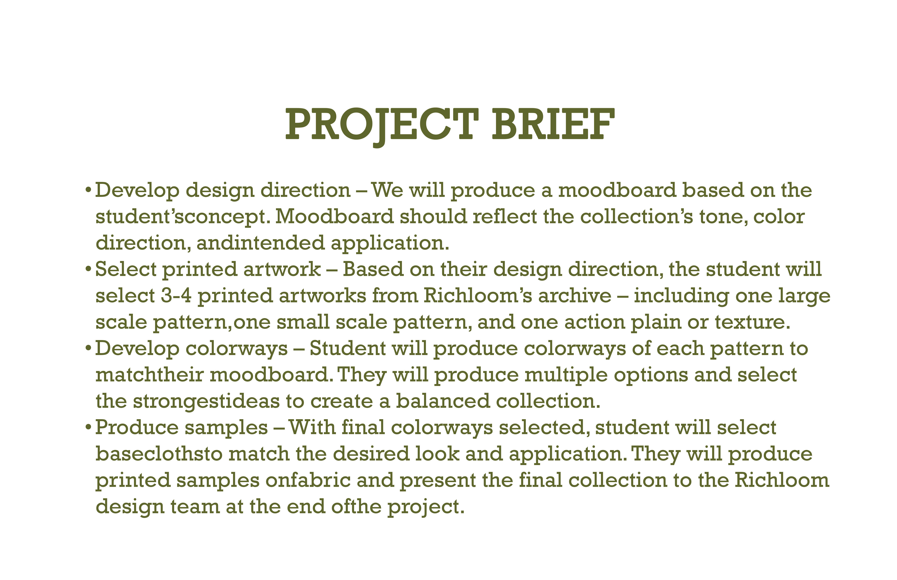
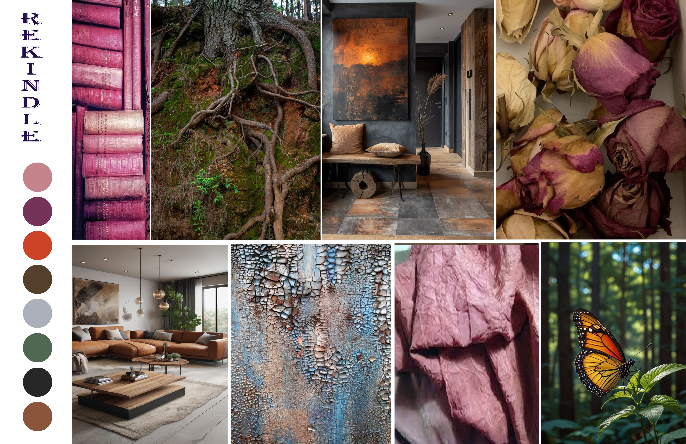
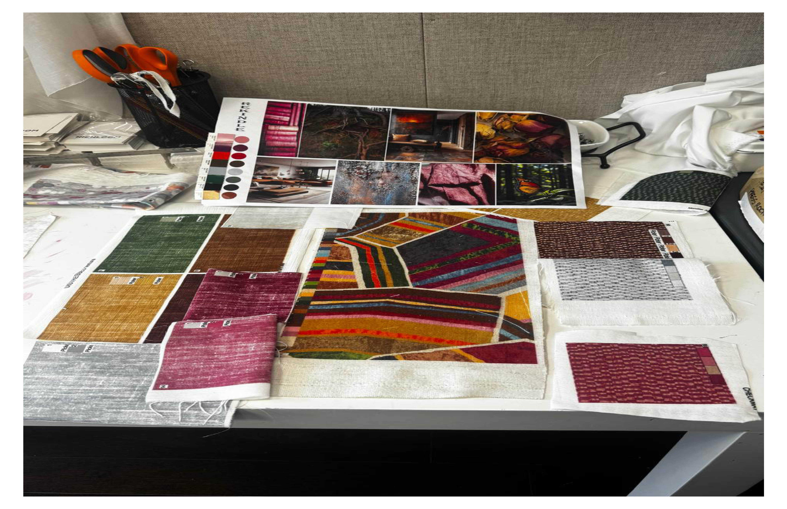
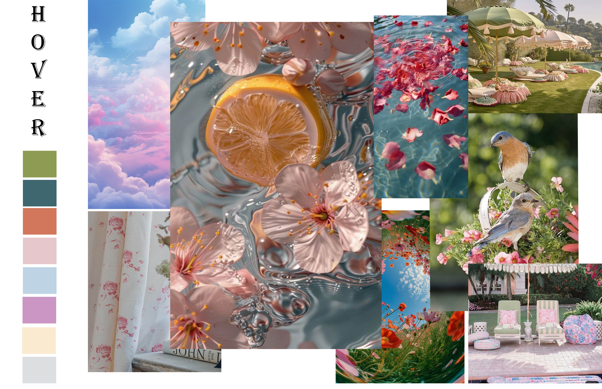
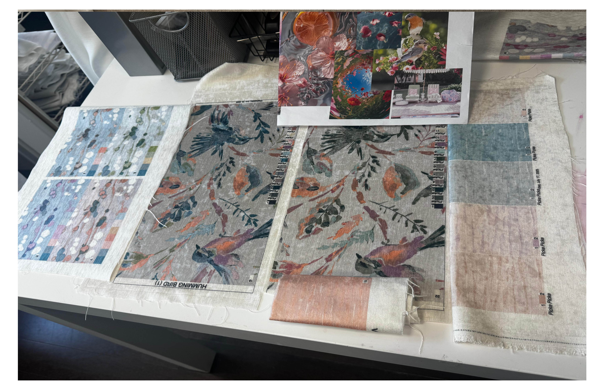
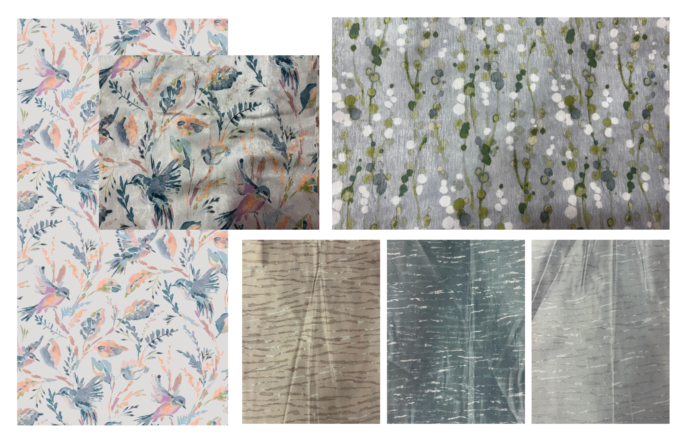

Project Brief

This project was part of my summer internship, where I was introduced to AVA, a textile design software. The assignment focused on developing mood boards and translating them into recolored textile designs using the brand’s existing archive. For each mood board, I selected a set of existing artworks and explored color application through recoloring. This process helped me understand how to create balanced and cohesive design variations while working within an established design language. The project served as a learning experience to develop my skills in digital coloration and to understand how textile adaptations are approached in an industry setting.
Moodboard 1

An earthy, grounded mood inspired by nature and time-worn surfaces, enriched with subtle depth and muted vibrancy. The palette balances warmth and richness, creating a cohesive and tactile visual language.


Moodboard 2

A soft, airy mood inspired by delicate florals, gentle light, and a sense of calm outdoor serenity. The palette blends muted pastels with subtle neutrals, creating a light, fresh, and soothing visual language. Overall, it evokes a feeling of quiet elegance with a touch of playful charm.

